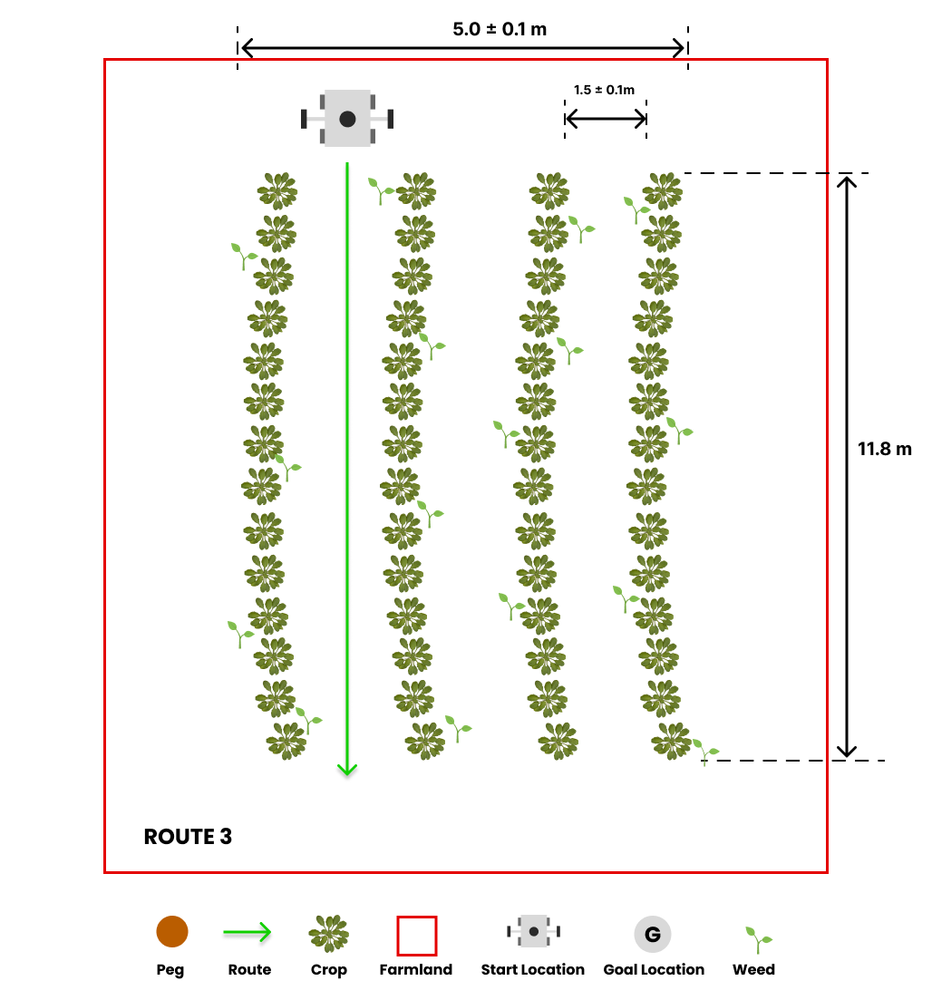

Task 2: Weed Detection¶

General Description¶
The detection of weeds in fields is crucial for the growth of crops, as weeds can compete for essential resources like water, sunlight, and nutrients, and also act as breeding grounds for pests and diseases. Agricultural robots play a vital role in this regard by navigating through rows of crops to identify and communicate the locations of any weeds present in the field.
Warning
You are expected to complete this task using MATLAB exclusively. You can find instructions on how to install MATLAB on your computer here. If you need help with creating a ROS node in MATLAB, you can find instructions here.
Task Guidelines¶
Launching the Task¶
In a new terminal, run the following launch file to bring up the robot in Gazebo and RViz:
You should see the display below in Gazebo and RViz respectively.


Once the route is selected, the robot will promptly start moving. It’s worth noting that the robot is equipped with a camera that detects weeds in the field.
To publish the locations of the weeds detected by the robot, you should use the topic /parc_robot/weed_detection. The message type for this topic should be std_msgs/Strings, which should be in the form of a JSON array string. The array should contain pairs of X and Y values that represent the cartesian coordinates of the weeds in the field from the Gazebo world frame. Here’s an example of how the array should look like: [[x1, y1], [x2, y2], [x3, y3], ...]. You can do this in MATLAB by passing the array to the jsonencode function.
JSON Array String
Spacing between the values in the array is not important and will not affect results. The following are all valid JSON array strings: [[x1,y1],[x2,y2],[x3,y3],...], [[x1, y1], [x2, y2], [x3, y3], ...], [[x1,y1], [x2,y2], [x3,y3], ...], [[x1, y1],[x2, y2],[x3, y3],...], etc.
Computing the X and Y values
To get the X and Y coordinates of the weeds, you might first get the position of weed in the robot frame, and then transform the position to the Gazbeo world frame. You can find more resources on frame transformations here.
A new topic called /parc_robot/robot_status has been added to publish the current status of the robot. The message type for this topic is /std_msgs/String, which indicates whether the robot has started moving along the route or has finished the designated route. The robot status has two possible values: “started” and “finished”.
Exploring multiple routes¶
We have prepared three pre-defined routes you can use as you develop your solution with each route having a different starting location.



The default route is route1, but you can select the second and third route option (route2 and route3) by passing the argument in the roslaunch command as follows:
## route2
roslaunch parc_robot task2.launch route:=route2
## route3
roslaunch parc_robot task2.launch route:=route3
We recommend you play around with at least these three routes to ensure your solution is robust to different start locations.
Moving at different speeds¶
The robot can move at different speeds. The default speed is 0.1 m/s, but you can change the speed by passing the argument in the roslaunch command as follows:
We recommend you play around with different speeds to ensure your solution is robust to different speeds.
Task Expectations¶
The objective of the task is to drive the robot through a row of crops to identify and communicate the locations of any weeds in the field. When the robot reaches the end of the row, it will come to a stop, and you should publish the weed locations to the /parc_robot/weed_detection topic.
It’s important to note that real-time publication of weed locations is not necessary. You can publish the locations of the weeds after the robot has stopped moving, which you can monitor through the /parc_robot/robot_status topic.
After detecting that the robot has stopped moving, you need to publish the coordinates of the weeds in the field to the /parc_robot/weed_detection topic. The message should contain a list of X and Y position for each weed location, specified in the Gazebo world frame.
Publishing and Subscribing to Topics in MATLAB
To learn more about publishing and subscribing to topics in MATLAB, you can find instructions here and examples specific to this task here.
Preparing your submission¶
Your solution should be prepared as ROS packages to be saved in your solution folder. Create a scripts folder in your ROS package which contains ALL the code you need in your solution. Name this MATLAB file: task2_solution.m.
Hence, your solution to Task 2 should be run by calling the following commands:
matlab -nodesktop -nosplash -r "run('~/catkin_ws/src/<your solution folder>/scripts/task2_solution.m')"
Task Rules¶
- Be sure to publish just ONCE to the
/parc_robot/weed_detectiontopic, AND at the END of the run. The run ends when the robot sendsfinishedon the/parc_robot/robot_statustopic. - You are not allowed to publish to the
/cmd_veltopic. The robot will be driven through the field by the simulation. You are only allowed to publish to the/parc_robot/weed_detectiontopic. - You should publish the locations of the weeds in the field to the
/parc_robot/weed_detectiontopic not more than 5 seconds after the robot has stopped moving. - You are only allowed to use MATLAB for this task. You are not allowed to use any other programming language.
Task Evaluation¶
Your solution will be evaluated based on the following criteria:
| S/N | Criteria/Metric | Description |
|---|---|---|
| 1 | Accuracy | Accuracy is based on how many weeds are correctly detected, within 0.1m of their actual location. Incorrect detections or missed weeds reduce accuracy. Multiple detections within 0.1m of the same actual location count as one accurate detection. |
| 2 | Robustness | We measure the robustness of your solution by evaluating its accuracy across various routes and speeds. The accuracy is given a weight and averaged across different speeds and all three routes to determine the overall robustness of your solution. |
| 3 | Precision | Precision is evaluated based on the number of weeds detected within 0.1m of their actual location by your solution. False negatives incur higher penalties in this evaluation, indicating that missing weeds is considered more detrimental than detecting weeds that are not actually present. |